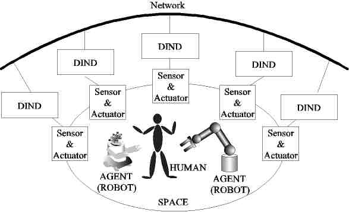

Motivation and Scope
We propose papers and publication, organize and operate special sessions, tracks, provide volunteers to review papers within our scope at IEEE IES flagship conferences.
We have been working for Intelligent Spaces (iSpaces) which have functions of understanding environments by networking sensors and serving people by using Mechatronics/Robotics devices. In iSpaces Robotics play important roles from a view point of human-machine interaction. And there have been a lot of human robot interaction technologies such as gesture recognition, voice recognition, human face recognition, and etc. Intelligent Spaces are good targets to integrate many kinds of technologies.
Current research in the area of Control, Robotics, and Mechatronics can be generally listed as follows.
Conventionally, there is a trend to increase the intelligence of a robot (agent) operating in a limited area. The Intelligent Space concept is the opposite of this trend. The surrounding space has sensors and intelligence instead of the robot (agent). A robot without any sensor or own intelligence can operate in an Intelligent Space. The difference of the conventional and Intelligent Space concept is shown here:
Intelligence Space is a space (room, corridor or street), which has distributed sensory intelligence (various sensors, such as cameras and microphones with intelligence, haptic devices to manipulate the space) and it is equipped with actuators. Actuators are mainly used to provide information and physical support to the inhabitants. This is done by speakers, screens, pointing devices, switches or robots and slave devices inside the space. The various devices of sensory intelligence cooperate with each other autonomously, and the whole space has high intelligence. The platform of the communication is a middleware.
Each agent has sensory intelligence. The intelligent agent has to operate even if the outside environment changes, so it needs to switch its role autonomously. The agent knows its role and can support man. Intelligent Space re-composes the whole space from each agent’s sensing information, and returns intuitive and intelligible reactions to man. In this way, Intelligent Space is the space where man and agents can act mutually.
In order to realize the Intelligent Space, sensors are located, which recognize space. However, we cannot change normal environment without considering economical and laborious problems. Moreover, appearance should be considered prudentially. Thus, it should be restricted to the range, which does not bring big influence on the existing environment.
Based on these, Distributed Intelligent Network Device (DIND) is proposed, which is composed of three basic elements. The elements are sensor, processor (computer) and communication device. DIND is a small device based on three functions that the dynamic environment, which contains people and robots, is watched by the sensor, information is processed to be known easily by the clients by the processor and the DIND communicates with other DINDs through networks.

References
We have been working for Intelligent Spaces (iSpaces) which have functions of understanding environments by networking sensors and serving people by using Mechatronics/Robotics devices. In iSpaces Robotics play important roles from a view point of human-machine interaction. And there have been a lot of human robot interaction technologies such as gesture recognition, voice recognition, human face recognition, and etc. Intelligent Spaces are good targets to integrate many kinds of technologies.
Current research in the area of Control, Robotics, and Mechatronics can be generally listed as follows.
- Robot control
- Bilateral control of master slave systems
- Internet-based control (contol of time-delayed systems)
- Robot technology middleware
- Telemanipulation, telerobotics and telepresence systems
- Intelligent space
- Emerging technologies for mechatronics applications (cognitive and etho-robotics, human system interaction, SME robots)
Conventionally, there is a trend to increase the intelligence of a robot (agent) operating in a limited area. The Intelligent Space concept is the opposite of this trend. The surrounding space has sensors and intelligence instead of the robot (agent). A robot without any sensor or own intelligence can operate in an Intelligent Space. The difference of the conventional and Intelligent Space concept is shown here:
Intelligence Space is a space (room, corridor or street), which has distributed sensory intelligence (various sensors, such as cameras and microphones with intelligence, haptic devices to manipulate the space) and it is equipped with actuators. Actuators are mainly used to provide information and physical support to the inhabitants. This is done by speakers, screens, pointing devices, switches or robots and slave devices inside the space. The various devices of sensory intelligence cooperate with each other autonomously, and the whole space has high intelligence. The platform of the communication is a middleware.
Each agent has sensory intelligence. The intelligent agent has to operate even if the outside environment changes, so it needs to switch its role autonomously. The agent knows its role and can support man. Intelligent Space re-composes the whole space from each agent’s sensing information, and returns intuitive and intelligible reactions to man. In this way, Intelligent Space is the space where man and agents can act mutually.
In order to realize the Intelligent Space, sensors are located, which recognize space. However, we cannot change normal environment without considering economical and laborious problems. Moreover, appearance should be considered prudentially. Thus, it should be restricted to the range, which does not bring big influence on the existing environment.
Based on these, Distributed Intelligent Network Device (DIND) is proposed, which is composed of three basic elements. The elements are sensor, processor (computer) and communication device. DIND is a small device based on three functions that the dynamic environment, which contains people and robots, is watched by the sensor, information is processed to be known easily by the clients by the processor and the DIND communicates with other DINDs through networks.
References
- K. Sakotani, S. Kato, M. Niitsuma and T. Tanaka, "Task Activity Recognition and Workspace Extraction for Nursing Care Assistance in Intelligent Space," 2020 IEEE/SICE International Symposium on System Integration (SII), Honolulu, HI, USA, 2020, pp. 1259-1264, doi: 10.1109/SII46433.2020.9025950
- R. Takeuchi, H. Yamazoe and J. Lee, "Human observation-based calibration of multiple RGB-D cameras for intelligent space," 2015 IEEE/SICE International Symposium on System Integration (SII), Nagoya, Japan, 2015, pp. 94-99, doi: 10.1109/SII.2015.7404960
- J. Rodríguez-Araújo, J. J. Rodríguez-Andina, J. Fariña and M. Chow, "Field-Programmable System-on-Chip for Localization of UGVs in an Indoor iSpace," in IEEE Transactions on Industrial Informatics, vol. 10, no. 2, pp. 1033-1043, May 2014, doi: 10.1109/TII.2013.2294112
- K. Ono and J. Lee, "A smart phone based interaction in intelligent space using object recognition and facing direction of human," Proceedings of the 2013 IEEE/SICE International Symposium on System Integration, Kobe, Japan, 2013, pp. 216-221, doi: 10.1109/SII.2013.6776754
- P. Krushinitskiy and G. Sziebig, "Review of open source computing devices for iSpace in production workshops," 2013 IEEE 4th International Conference on Cognitive Infocommunications (CogInfoCom), Budapest, Hungary, 2013, pp. 677-682, doi: 10.1109/CogInfoCom.2013.6719187
- K. Morioka, Joo-Ho Lee and H. Hashimoto, "Physical agent for human following in intelligent sensor network," IEEE/RSJ International Conference on Intelligent Robots and Systems, Lausanne, Switzerland, 2002, pp. 1234-1239 vol.2, doi: 10.1109/IRDS.2002.1043911
- M. Niitsuma, K. Yokoi and H. Hashimoto, "Describing human-object interaction in Intelligent Space," 2009 2nd Conference on Human System Interactions, Catania, Italy, 2009, pp. 395-399, doi: 10.1109/HSI.2009.5091012
- Joo-Ho Lee & Hideki Hashimoto (2002) Intelligent Space — concept and contents, Advanced Robotics, 16:3, 265-280, doi: 10.1163/156855302760121936